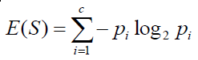

Walter Neto
Sou de Bebedouro - SP
Morei 9 ano em Ribeirão Preto, onde me formei em Eng. de Computação
Sou cidadão de Campinas desde o comço de 2015
Comecei a programar computadores aos 12 anos de idade
Sou usuário e ja fiz alguns commits para o projeto OpenBSD
Em ML comecei a trabalhar com OCR e como gosto muito mais de ter know-why do que know-how, estudei bastante da área e falta muito ainda pra aprender
Machine Learning(ML) é um conceito que surgiu na metade do século passado, mas que lentamente evoluiu devido a complexidade e tecnologias disponíveis para avanço nos estudos na época do seu surgimento.
É uma das áreas de Inteligência Artificial / Artificial Intelligence (AI / IA).
Provavelmente você é um usuário de ML, e digo provavelmente pois podemos ter alguém "fora da curva" nessa apresentação. Ex.: Monges :-P
Quando você usa um buscador na internet(Google), uma rede social(Facebook) ou le seus emails(GMai / Hotmail / Yahoo), provavelmente existe um algoritmo de ML embarcado nestes serviços que promovem uma melhor experiência no uso desta aplicação.
Primeira Definição
Machine Learning: Field of study that gives computers the ability to learn without being explicitly programmed.
Arthur Samuel (1959)
Segunda Definição (mais formal)
Well-posed Learning Problem: A computer program is said to learn from experience E with respect to some task T and some performance measure P, if its performance on T, as measured by P, improves with experience E.
Tom Mitchell (1998)
Principais eventos na linha do tempo
<1950 - Vários trabalhos e descobertas em Estatística e Teoria da Probabilidade. Ex.: Bayle, Thomas - Doctrine of Chances, Século XVIII.
1950 - Turing Test, Turing's Learning Machine, trouxe idéias que ajudaram na criação dos Algoritmos Genéticos.
1957 - Invenção do Perceptron. A invenção é um dos marcos de descobertas no campo da IA e aguçou bastante a área de ML.
1967 - Nearest Neighbor, o início do reconhecimento de padrões.
1982 - Recurrent Neural Network, John Hopfield popularizou este tipo de ML com a Hopfield Network, que foi descrita aproximadamente em 1974.
Principais eventos na linha do tempo
1989 - Axcelis, Inc. lança o Evolver, o primeiro solução comercial de software de algoritmos genéticos.
1995 - Algoritmo Ramdom Forest
1995 - Support Vector Mahcines (SVM)
1997 - IBM Deep Blue supera Kasparov
>2000 - Deep Learning começa a ser praticável e a comercialização de produtos que utilizam RNAs aumenta consideravelmente
>2010 - ML se torna parte de uma grande massa de serviços de software e ganha uma enorme publicidade
Os dois tipos mais estuadados são:
Supervised Learning
Unspervised Learning
Exitestem outros também, como Recommender Systems e Reinforcemente Learning.
Neste tipo de algorítmos encontramos a solução de dois tipos de problemas, predição e classificação.
Ja neste tipo de abordagem, nós não temos uma base de dados para aprendizagem, e os algorítmos aqui utilizados tentam agrupar(Clustering) os dados fornecidos.
É muito comum utilizar este tipo de algoritmo pra extrair informações de um conjunto de dados que as vezes não conseguimos enxergar com uma análise humana em um grande dataset. Ex: Genoma.
Entropia
Jamais tente implementar os algorítmos de calculos matemáticos por conta própria, a menos que você seja um PHD em Matemática Aplicada a Computação. Pra isso utilize as bibliotecas de algebra linear pra sua linguagem de programação.
GNU Octave
Matlab
R
scikit-learn e Theano (Python)
Weka (Java)
Accord.NET e Encog Machine Learning Framework (.NET)
Não existe pergunta boba, existe bobo que não pergunta e volta sem nenhuma resposta pra casa
Um amigo de um amigo meu
www.alephbit.com.br
wneto@alephbit.com.br
Twitter: @__wneto
/